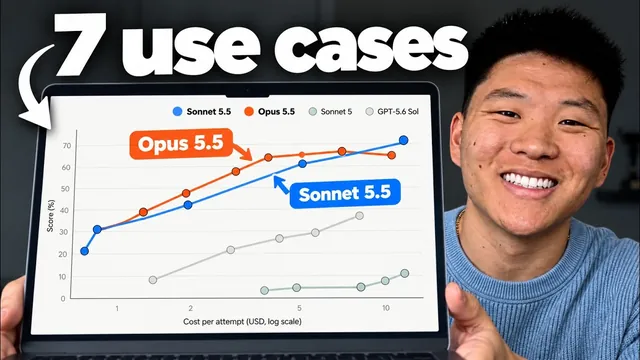

Sonnet 5.5 vs Opus 5.5 붙여봤다 — 핵심만

원본 영상 보기 →
- 프롬프트가 모호할수록 Opus의 값어치가 커져요
- 스킬이 있으면 모델 격차가 줄어듭니다
- 한 번 더 시키는 비용을 계산에 넣으세요
한 줄 요약
Nate Herk가 같은 프롬프트로 Sonnet 5.5와 Opus 5.5를 7가지 실전 과제에 돌려서 비교했어요. 결론은 이렇습니다. 결과 기준이 명확하면 Sonnet, 모호하고 창의적인 목표면 Opus. 비용은 Opus가 대략 두 배예요.
전체 내용 정리
값은 정확히 두 배인데, 품질이 두 배는 아니에요
Sonnet 5.5는 입력 토큰 100만 개당 2달러, 출력 100만 개당 10달러입니다. Opus 5.5는 각각 4달러와 20달러예요.
Nate는 두 모델의 노력 수준(effort)을 모두 '높음'으로 맞추고, 일곱 세션에 똑같은 프롬프트를 줬습니다. 목적은 어느 쪽이 더 똑똑한지 가리는 게 아니라, 어떤 일에 어떤 모델을 쓸지 감을 잡는 거였어요.
기준이 뭘까요: 완료를 정의할 수 있느냐
Claude 쪽 가이드는 이렇게 안내합니다. 범위가 분명한 일상 코딩, 버그 수정, 깔끔한 문서·슬라이드·스프레드시트·원페이지 보고서는 Sonnet에 맡기세요. 복잡한 판단이 필요한 장기 에이전트형 작업이나 가장 어려운 문제는 Opus 몫이고요.
Nate는 이걸 한 줄로 정리합니다. "무엇이 완료인지 정의하는 과정부터 같이 고민해야 하면 Opus, 완료 기준이 분명하면 Sonnet."
랜딩 페이지와 모션 쇼릴은 한 판씩 나눠 가졌어요
PerkForm 랜딩 페이지에서는 Sonnet이 히어로 섹션의 캔을 훨씬 실감 나게 만들었습니다. 다만 페이지 전체는 브랜드 가이드에 맞는 실제 이미지를 쓴 Opus 쪽이 나았어요.
실행 시간은 Sonnet 28분, Opus 52분이었고 비용도 Opus가 약 두 배였습니다. Nate는 Sonnet에게 "가짜 이미지 대신 실제 이미지를 써"라고 한 번 더 시키면 13달러 미만으로 비슷한 결과가 나왔을 거라며 Sonnet 승리로 봤어요.
모션 쇼릴은 달랐습니다. Opus가 배경, 카피, 사운드 디자인까지 더 Glido다웠어요. 비용은 Sonnet 14.37달러, Opus 20.55달러였는데, Nate는 Sonnet이 20달러를 써도 못 따라갈 거라며 Opus 승리로 했습니다.
모호한 목표는 Opus가 더 잘 풀어요
"연구에 기반한 90일 실행 계획을 세워 줘" 정도로만 모호하게 요청해 봤습니다.
Opus는 10월 1일부터 12월 29일까지 4분기 스프린트에 맞춘 월별 계획(구축·출시·확장)과, 실제로 체크할 수 있는 작업 문서까지 만들었어요. Sonnet은 11월 2일 런칭 기준으로 단계를 나눈 결과를 냈는데 정보는 많지만 한눈에 들어오지 않았습니다.
비용은 Opus가 20분에 9달러 조금 넘게, Sonnet이 14분에 5달러 조금 안 되게 들었어요.
Nate는 단서를 답니다. 가이드라인을 거의 안 줬기 때문에 벌어진 차이이고, 원하는 형태를 자세히 지시했다면 둘이 비슷했을 거라고요.
결과가 비슷하면 더 싼 쪽이 이깁니다
가상 회사 데이터로 엑셀 시트와 투자자용 피치 덱을 만들게 했어요. 두 모델 모두 수식이 촘촘히 들어간 여러 탭짜리 시트를 냈습니다. Nate는 값이 하드코딩된 시트를 싫어하는데, 둘 다 수식 기반이라 데이터를 고치면 전체가 갱신돼요.
피치 덱도 구성과 분위기가 거의 같았습니다(Opus 18장, Sonnet이 슬라이드는 더 많았어요). 그런데 이번에는 Opus가 오히려 더 싸고 빨랐습니다. 그래서 이 항목은 Opus 승리예요.
한 번에 잘 나온 쪽 vs 싸게 다듬을 수 있는 쪽
'내 PC에서 돌릴 수 있는 로컬 AI 모델'을 설명하는 HTML 페이지는 Opus가 설명이 더 충실했어요. Sonnet은 시각 자료가 더 좋았지만 이유 설명이 부족했고요. Nate는 Sonnet이 가격이 절반이라 "정보를 더 추가해 줘"라고 한 번 더 시키는 편이 낫다고 보고 Sonnet 승리로 했습니다.
X에서 오늘 AI 뉴스를 긁어오는 인터랙티브 대시보드는 Opus가 시각화와 사용성이 앞섰어요. 다만 Sonnet도 요구를 구체적으로 줬다면 만들 수 있었을 거고, 한 번에 나온 결과만 보면 Opus가 낫다고 했습니다.
최종 스코어는 Sonnet 4 대 Opus 3
마지막 유튜브 리소스 가이드는 결과가 거의 같았어요. Nate가 쓰는 스킬이 "좋은 결과물이 무엇인가"를 이미 정의해 둔 덕분입니다. Sonnet이 절반 시간에 1.40달러 더 싸게 끝내서 Sonnet이 이겼고요.
일곱 세션을 합치면 Opus는 약 46분 더 오래 돌았고 입력 토큰을 약 3,800만 개 더 썼습니다. 그런데 비용은 예상처럼 두 배까지 벌어지진 않았어요.
Nate의 마무리는 이렇습니다. 결국 각자의 스킬과 프롬프트, 프로세스에 맞춰 직접 테스트해 보세요.
핵심 인사이트
- 프롬프트가 모호할수록 Opus의 값어치가 커져요: 목표가 애매한 90일 계획이나 뉴스 대시보드에서는 Opus가 스스로 더 좋은 구조를 만들어 냈습니다. 반대로 지시가 구체적이면 Sonnet으로 충분해요.
- 스킬이 있으면 모델 격차가 줄어듭니다: "좋은 결과물의 정의"를 담은 스킬을 쓴 항목에서는 두 모델 결과가 거의 같았어요. 규칙을 잘 써 두면 싼 모델로 충분해집니다.
- 한 번 더 시키는 비용을 계산에 넣으세요: Sonnet은 다시 요청해도 Opus 한 번보다 쌉니다. 그래서 반복 수정이 쉬운 작업에는 Sonnet이 유리해요.
오늘 당장 해볼 것
- 지금 반복하는 업무 한 가지를 골라 "완료 기준을 한 문장으로 적을 수 있는가"를 확인해 보세요. 적을 수 있으면 Sonnet 5.5, 못 적겠으면 Opus 5.5로 시작하면 됩니다.
- 같은 프롬프트를 두 모델에 노력 수준 '높음'으로 각각 돌리고, 걸린 시간과 비용을 나란히 적어 보세요. 한 번만 해봐도 감이 옵니다.
- 자주 하는 작업의 "좋은 결과물이 이런 것"이라는 기준을 스킬이나 지침 문서로 저장해 두세요. 다음부터 싼 모델에 그 문서를 붙여서 결과를 비교하면 됩니다.